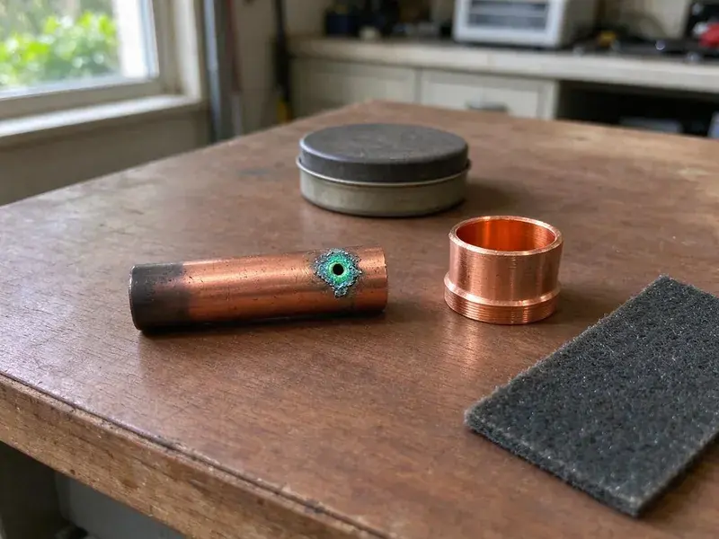
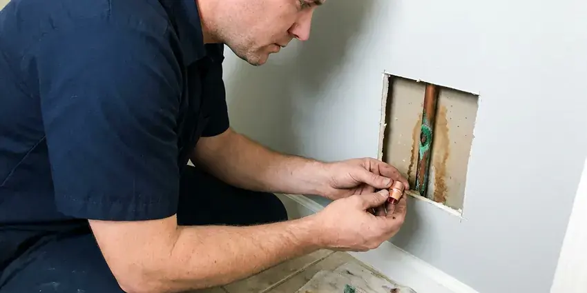

Water Softener Repair in Millcreek, UT
Hard water quickly overwhelms a struggling softener. Our plumbers in Millcreek, UT fix valves, brine systems and resin beds on most major brands.
- Satisfaction Assured
- Trained Technicians
- Accurate Softener Diagnostics
- Prompt, Local Service

Hard water creeping back? Get your softener repaired in Millcreek, UT.
Call now and we will test your water and fix the softener, often on the first visit.
Expert Water Softener Repair in Millcreek, UT
At BPK Plumbing, we provide trusted water softener repair services to the Millcreek, UT community. Hard water can cause numerous problems, and our expert technicians are dedicated to ensuring your system delivers the soft water your home needs. We handle everything from resin bed issues to control valve malfunctions, delivering a lasting repair.
Our expertise includes:
- Troubleshooting electrical and programming errors.
- Troubleshooting electrical and mechanical faults.
- Finding control valve malfunctions and leaks.

Additional Plumbing Repair Services in Millcreek, UT
We offer expert plumbing repair services across Millcreek, UT to stop leaks, clear blockages, and keep every fixture working the way it should.


Customers
Why Choose BPK Plumbing for Water Softener Repair in Millcreek, UT?
Many softeners that seem dead only need a valve rebuild or a cleaned injector. We repair rather than replace when it makes sense for you.
- Quality Parts, We use only quality, durable replacement parts for long-lasting repairs.
- Transparent Pricing, You'll receive honest, upfront pricing with no hidden fees before any work begins.
- Clear Communication, You will always receive a plain explanation of the problem and repair options before any work begins.
Citywide Coverage
From older systems in established neighborhoods to newer metered units in recent builds, we cover every part of Millcreek. Wherever your softener is, we can get to it.
Experienced Team
The BPK Plumbing team brings years of hands-on experience to every water softener repair job. We've seen and fixed countless issues, bringing a knowledgeable approach to diagnosing and resolving your system's problems efficiently and effectively.
Safety-First Approach
Safety is paramount in all our water softener repair services, especially when dealing with electrical components or plumbing connections. We adhere strictly to all local Millcreek and Utah plumbing codes and safety regulations, protecting your home and family.
Trusted Certified Millcreek Plumbing Services Professionals
At BPK Plumbing, we take pride in providing certified plumbing services throughout Millcreek, UT. Backed by recognized industry credentials, our experienced plumbers combine technical skill with genuine customer care. Whether it is repair, installation, or maintenance, we follow strict safety and quality standards to deliver lasting results you can trust.
Call Us Now PHCC Plumbing Contractor Recognition
PHCC Plumbing Contractor Recognition Better Business Bureau (BBB) Accreditation
Better Business Bureau (BBB) Accreditation Angi Certified Pro
Angi Certified Pro ISO 9001 Quality Management Certification
ISO 9001 Quality Management CertificationDependable Water Softener Repair Services in Millcreek, UT
Water Softener Leak Repair in Millcreek, UT
Leaks in a water softener can range from minor drips around fittings to significant puddles from a cracked tank or faulty valve. These leaks can cause water damage and waste water. Our plumbers quickly pinpoint the source of leaks, whether from seals, O-rings, hoses, or internal components, and perform lasting repairs. We use appropriate sealing compounds and replacement parts for a lasting fix in Millcreek, UT.

Salt Usage and Settings Repair in Millcreek
A softener using far too much salt or water often has settings that do not match your hardness or household. Older timer units may regenerate on a schedule regardless of use. We retest hardness, reprogram the valve or upgrade the head to a metered control. Proper settings can significantly cut salt and water use.
Emergency Water Softener Repair in Millcreek
A sudden water softener breakdown can leave your home vulnerable to immediate hard water problems, especially if it leads to a leak. We offer emergency water softener repair services to address urgent issues promptly. Whether your system is continuously draining, completely unresponsive, or flooding your utility room, our rapid response team in Millcreek is available to diagnose and repair the problem efficiently, limiting disruption and damage to your property.
Popular Water Softener Brand Repair in Millcreek
BPK Plumbing is experienced in repairing a wide range of popular water softener brands, including GE, Whirlpool, Culligan, Kenmore, EcoPure, and Morton. Our technicians are familiar with the particular designs and common issues of these manufacturers, delivering an accurate and efficient repair regardless of your system's make or model. Count on us to handle your brand-specific water softener repair in Millcreek.
Water Softener Leak Detection & Repair in Millcreek, UT
Leaks around your water softener can be caused by cracked tanks, loose fittings, faulty O-rings, or pressure issues. Even a small leak can lead to water damage and wasted water. Our team uses dedicated tools to quickly locate the source of any leak, whether it's a slow drip or a significant pool. We then perform precise repairs, from tightening connections and replacing seals to patching cracks or replacing damaged components, protecting your home from water intrusion.
Resin Bed Replacement in Millcreek
Over time, the resin beads in your water softener can become fouled or degrade, losing their ability to exchange ions and soften water. This is a frequent issue, especially with older systems or those exposed to high levels of chlorine. BPK Plumbing provides professional resin bed replacement services, properly removing old resin and installing new, high-quality media to restore your softener's efficiency and capacity in Millcreek.
Control Valve Repair in Millcreek
The control valve is the brain of your water softener, directing the flow of water and starting regeneration cycles. When it malfunctions, your system can stop softening water or waste salt. BPK Plumbing technicians are experts at diagnosing and repairing common control valve issues, whether mechanical or electronic, restoring precise timing and efficient operation. We stock common replacement parts to speed up your repair in Millcreek.

No-Salt Water Conditioner Repair in Millcreek, UT
While less common than traditional softeners, no-salt water conditioners also require maintenance and occasional repair. These systems work by conditioning water to prevent scale buildup without removing minerals. If you notice scale returning or reduced water pressure, your no-salt system may need attention. BPK Plumbing is experienced in diagnosing and repairing issues with these unique units in Millcreek, UT, ensuring they continue to protect your plumbing and appliances effectively.
Water Softener Repair Near Me in Millcreek, UT
When you search for water softener repair near me in Millcreek, UT, you want a trusted local company that understands your needs. BPK Plumbing is well established in the community, providing timely and reliable service right to your doorstep. We pride ourselves on being the go-to plumbing experts for your neighborhood, offering focused solutions for the water conditions here.
Choosing a local plumbing partner for your water softener repair means quicker response times and technicians who are familiar with the area's common hard water challenges. Our team is always ready to serve homes and businesses throughout Millcreek, ensuring that expert help for your water softener is always just a short drive away. We're committed to keeping your water soft and your plumbing in good shape.
BPK Plumbing at a Glance
- Licensed and insured plumbers serving Millcreek, UT
- Same-day appointments and 24/7 emergency response
- Clear written estimates, no hidden fees
- 4.8-star rated by 470+ Utah customers
Millcreek Map
Millcreek Information
- Population
- 62,205
- Area codes
- 385/801/435
- Service area
- Millcreek and communities within 40 miles
- Nearby
- Murray, Taylorsville, Salt Lake City, Sandy
For homes in Millcreek, UT, where water hardness can vary, a properly functioning water softener is crucial for protecting plumbing, appliances, and ensuring comfortable water quality for daily use.
Expert Services
Trust our professionals for reliable BPK Plumbing solutions in Millcreek, UT.
Our Specialized Plumbing Services in Millcreek, UT
At BPK Plumbing, we provide a complete range of plumbing services across Millcreek, UT. From leak detection to full system installations, our team ensures fast, precise, and affordable service for both residential and commercial properties. Explore our core services below:


How Our Water Softener Repair Process Works in Millcreek, UT
At BPK Plumbing, we follow a simple, efficient process to ensure your water softener repair in Millcreek, UT is handled professionally from start to finish.
Request a Quote
Contact BPK Plumbing by calling (385) 543-4073 to schedule an appointment. Our helpful staff will gather details about your water softener issue and set up a convenient service time.
Diagnosis & Plan
A certified plumber will inspect your water softener, perform diagnostic tests, and identify the root cause of the problem. We will then explain the necessary repairs and provide a transparent, upfront quote.
Expert Repair
Once you approve the quote, our technician will proceed with the repair using quality parts and proven techniques. We work promptly to restore your water softener's functionality and test the system thoroughly.
Frequently Asked Questions About Water Softener Repair in Millcreek
Most repairs fall between $150 and $450, including valve rebuilds, injector cleaning and motor replacement. Resin replacement usually costs $400 to $900. We give a firm quote after testing.
Several factors can cause a water softener to stop working, including a clogged drain line, a faulty control valve, a salt bridge in the brine tank, depleted resin beads, power outages affecting the timer, or mineral buildup in various components. Our diagnostics will find the exact cause.
Most repairs take one to two hours including testing. Resin replacement may take two to three hours depending on the tank size.
Breaking up a salt bridge or cleaning the brine tank is a reasonable DIY task. Valve rebuilds, injector work and resin replacement are easier with a technician who has the right tools and parts.
While some minor issues like refilling salt or checking basic settings can be DIY, most water softener repairs involve complex plumbing, electrical components, or specialized parts. Attempting a DIY repair without proper knowledge can cause further damage or void warranties. We recommend calling a professional for reliable and safe repairs.
Our technicians are trained and experienced in repairing all major water softener brands. This includes popular manufacturers like Fleck, Culligan, Kenmore, Whirlpool, Morton, EcoPure, GE, and Clack, among others. We have access to a wide range of replacement parts for various models.
If your water softener is leaking, right away turn off the water supply to the unit and unplug it (if electric) to prevent further damage. Then, contact BPK Plumbing right away. Leaks can be caused by cracked tanks, loose fittings, or faulty seals, and prompt repair is crucial to prevent water damage to your home.
Signs include spotty dishes, soap that will not lather, white scale on faucets, stiff laundry and a brine tank where salt level never drops. Dry, itchy skin after showers is one more clue.
What People Are Saying About Our Plumbing Experts?

Robert G.
The trenchless sewer replacement saved our front yard. They walked us through the camera inspection footage first so we knew exactly what we were paying for.
Sewer Line Replacement · Sandy, UTJames P.
Our commercial plumbing system had a leak under the sink, and BPK Plumbing handled it professionally. The plumbers arrived quickly and restored everything without disruption to our customers.
Commercial Plumbing · Millcreek, UT
Laura S.
I scheduled a water heater replacement, and the team made the process smooth and affordable. The new unit works perfectly, and they cleaned up after completing the job.
Water Heater Replacement · Salt Lake City, UTSofia M.
Two new toilets installed in one visit, no mess left behind, and the tech even adjusted a faucet he noticed was dripping. Fair pricing and really friendly.
Toilet Installation · Murray, UT
Daniel K.
A pipe burst at 11 pm and they actually answered. The plumber showed up within the hour, shut everything down, and had us back to normal the next morning. Could not ask for more.
Emergency Plumbing · Taylorsville, UT
Mark T.
When our office needed drain cleaning, BPK Plumbing provided quick, reliable service. The plumber arrived on time and made sure every drain flowed perfectly before leaving. Very satisfied.
Drain Cleaning · West Valley City, UT